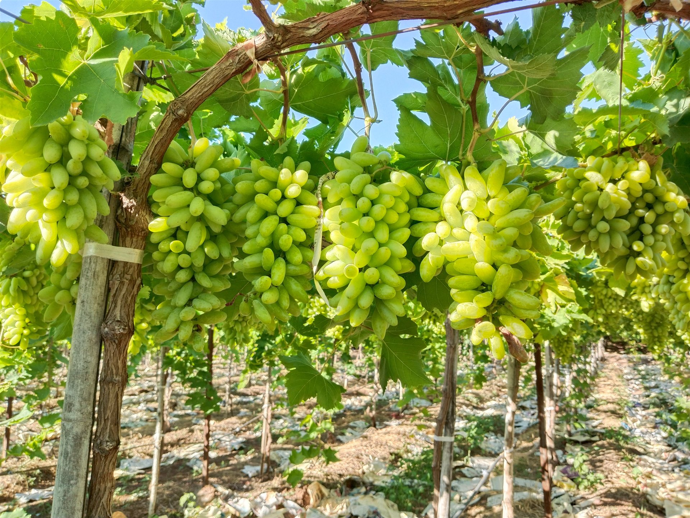
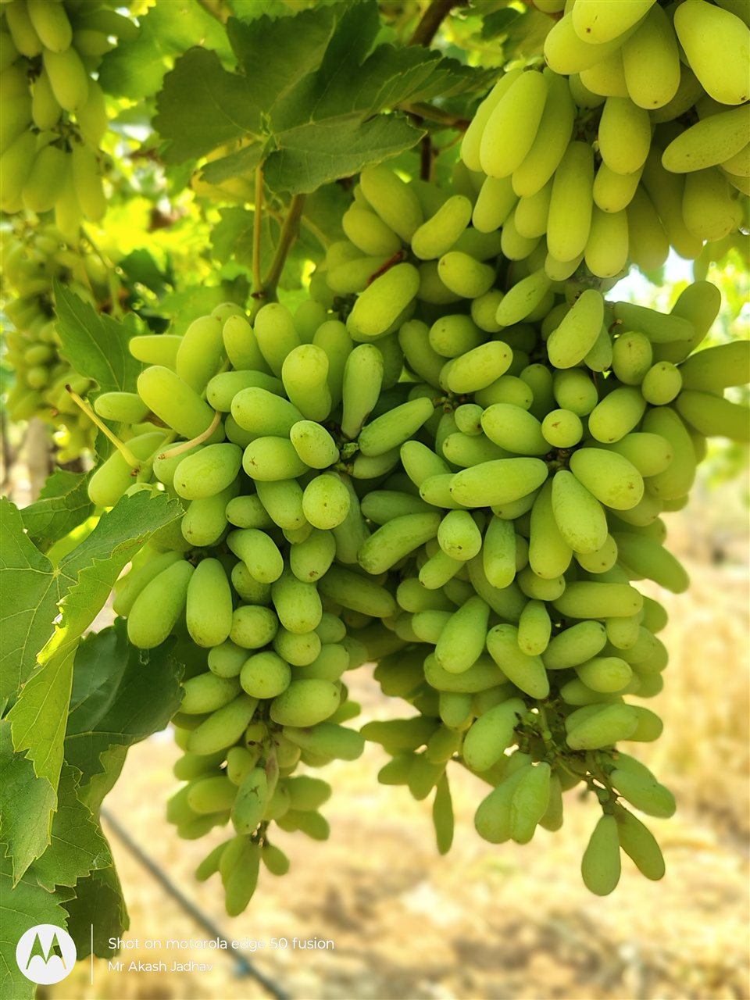
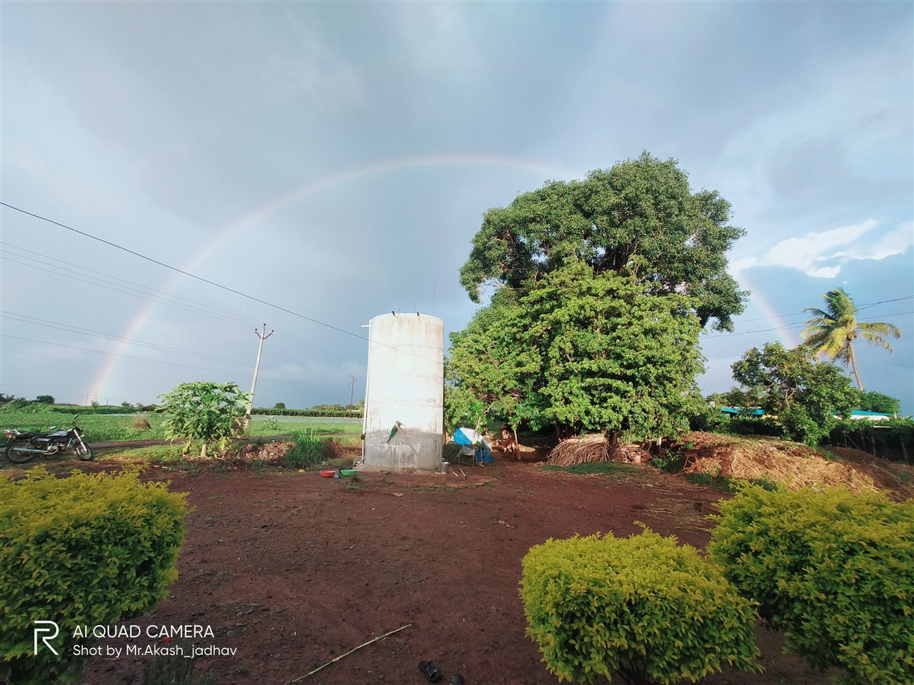

Wheat
गहू
आमच्या शेतातलं धान्य पीक.

पंचकेश्वर, महाराष्ट्र
ऐश्वर्य फार्म्सच्या द्राक्षबागेत आपलं स्वागत.
आमचे द्राक्षांचे प्लॉट्स, इतर पिकं आणि शेताची झलक पाहा.

Grape Plots
पंचकेश्वरच्या आमच्या कौटुंबिक द्राक्षबागेत वेगवेगळ्या प्लॉट्समध्ये या वाणांची लागवड करतो.
Our Crops
द्राक्षांसोबत आमच्या शेतात गहू, टोमॅटो आणि कांदाही पिकवतो.
Wheat
आमच्या शेतातलं धान्य पीक.
Tomatoes
शेतात स्वतंत्र प्लॉटवर टोमॅटोची लागवड करतो.
Onions
कांद्याची लागवडही आमच्या शेतीचा भाग आहे.
Farm Gallery
नवी पालवी, वेलीवरचे घड आणि तोडणीनंतरची क्रेट्स. आमच्या शेतातले फोटो आणि व्हिडिओ.
Find Us
भेटीपूर्वी किंवा द्राक्षांची उपलब्धता जाणून घेण्यासाठी फोन करा.
